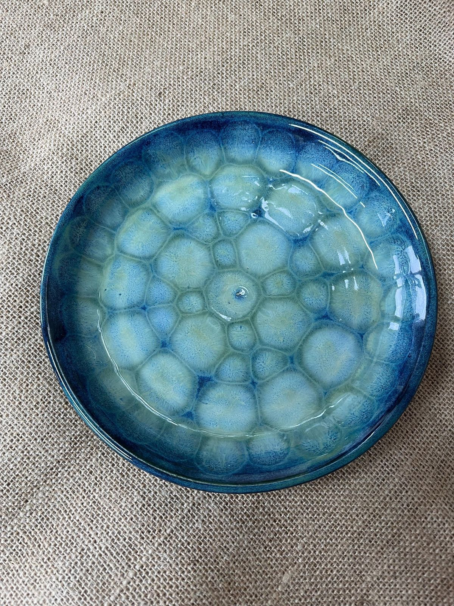

Option A
Glossy
A clear glaze that seals the colour and fires into a deep, reflective shine.
-
Glazing
Dip the piece or brush on an even coat of clear glaze, covering it completely so no raw clay shows.
-
Firing
In the kiln the glaze melts into a smooth, glassy layer that makes every colour underneath pop.